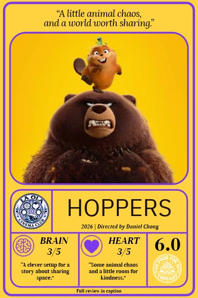

La Ola Cinema Club
From the collection
Hoppers
ComedySci-Fi
“A little animal chaos, and a world worth sharing”
From the Brain
A clever setup for a story about sharing space
From the Heart
Some animal chaos and a little room for kindness

Food for ThoughtSomething to turn over afterward. Questions, perspectives, and conversations.